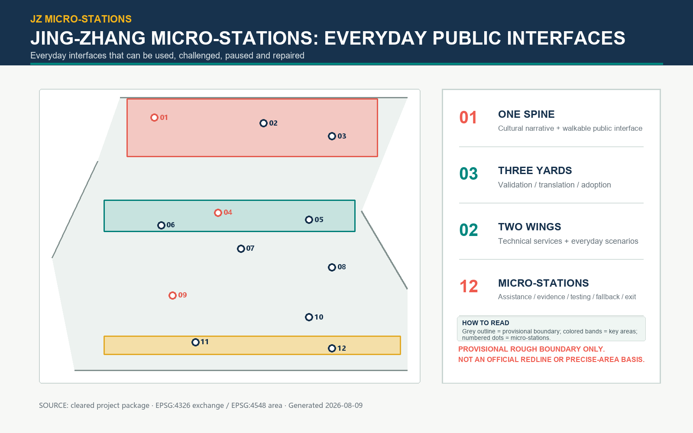

Three-level scope
43.6 km² research lens · ~11.4 km² provisional overall design · 3 provisional key areas
One spine · Three yards · Two wings · Twelve stations · Four seams

43.6 km² research lens · ~11.4 km² provisional overall design · 3 provisional key areas
Zhongzhiyuan assembly yard · AI Origin translation commons · Dazhongsi adoption square
0802 R&D · 05 service · 1401 green · 0702 community; conceptual topology only
1 walkable spine · 4 east-west seams · 2 local loops; redlines unknown
Narrative spine · cooling connectors · 12 pocket gardens · rain-garden edges
12 removable station envelopes; retain / renovate / adaptive-new options
8 accountable cards · 3 gated phases · exit fund and maintenance return
12 cards · 4 industrial tests · 6 personas · human review · no-AI fallback
Official announcement, cleared agent taskbook, MOHURD/MNR standard snapshots, provisional geometry basis, and seven official case pages. See sources.json.
Boundary, key-area extents, statutory controls, ownership, road redlines, building baseline, heritage inventory, and utilities remain explicit assumptions or data gaps. See assumptions.json.